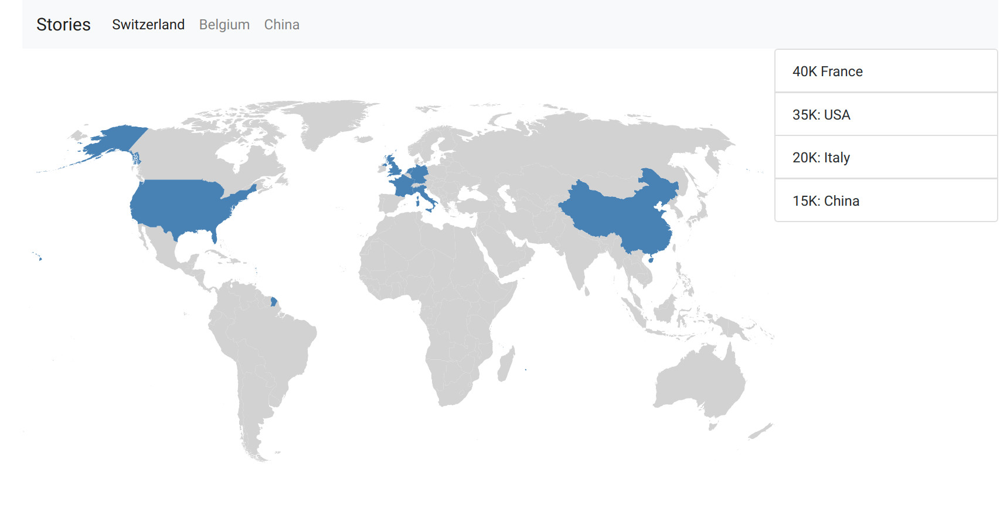

By Sylvain Beaud, Julie Djeffal & Timothée Lottaz
We added some user interface elements to enable the navigation between the stories we decided to show. We introduced an information pane on the right of the screen to display a summary of the main data. We also changed the display of the main traders on the map according the decision stated above.
Merging the network of trades with the map was quite a hard task. Since the network of trades (cytoscape) and the map are two different components on top of each other, it was impossible to allow the user to interact with both, without a big hack. We initially wanted to display informations on the countries *and* on the trade arrows. We finally took the choice of keeping it simple, and disable all interactions with the arrows. This way, even the “small importers” can be inspected at will.
The next step was the implementation of a timeline showing the total of exports by year related to a given story. We added some interactions so that the user can select a specific year and the associated data will be displayed on the map. At this point, we decided to get ride off the information pane and to replace it by a tooltip as explained in the next section.
For the project prototype step, we added a tooltip which shows the content of the information pane for each country. We focused our attention on improving the esthetic aspect of our visualisation by making the map more colorful, adding a loader, changing the tooltip so that the proportion of each country relatively to the world total exports is displayed.
Then, we decided that the easiest way for the user to access the main information related to a country was to add a proper country card which would replace the tooltip. This card shows up when the user clicks on a country and display useful information such as the exact total value of the trades or the country rank for a given year. The graph shown in the country card can also be used to navigate through the years.
Initially, we wanted the map to be fixed at the world level, to always have an overview of the trades. But we had a problem with the big traders located near the exporter: those arrows are short and large, which makes the whole region a mess. We thus introduced map controls: zooming and panning. It was difficult because we had to map Cytoscape’s zooming function to D3, but when it worked the whole viz was a lot more interactive, and cooler to use!